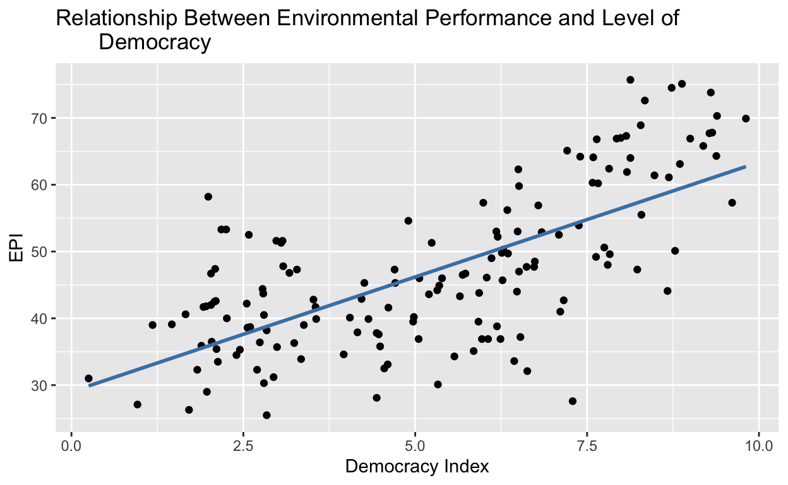
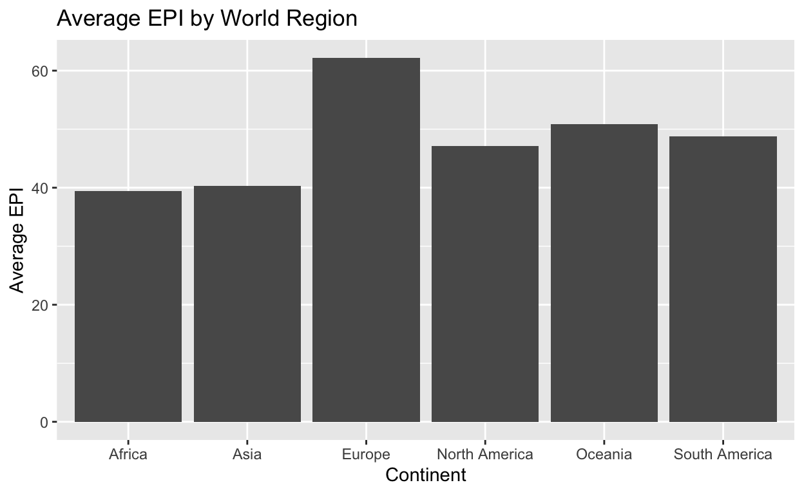
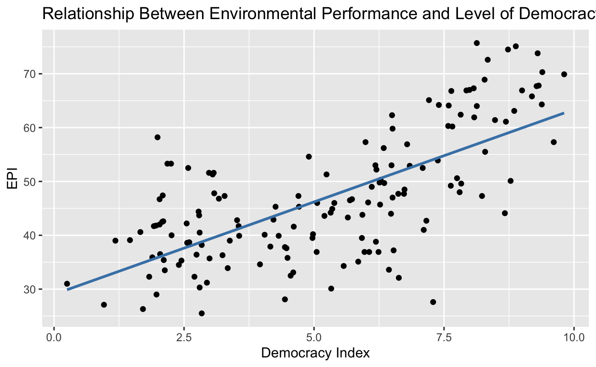

My final project
Research question: How does a country’s level of democracy affect its Environmental Performance Index (EPI)?
My hypothesis is that countries with higher levels of democracy have a higher EPI. This is because countries with higher levels of democracy have higher levels of public participation, which I think will allow for more attention to be brought to environmental issues. This will then lead to democracies being more likely to enact policies and programs in support of the environment.
My explanatory variable is the democracy rating of each country. The data I use for this variable is produced by the Economist Intelligence Unit (EIU) which ranks countries on a scale from 0 to 10, with 10 being the most democratic. The EIU explains that the democracy index is determined by factors such as the “Extent to which citizens can choose their political leaders in free and fair elections, enjoy civil liberties, prefer democracy over other political systems, can and do participate in politics, and have a functioning government that acts on their behalf”.
For my outcome variable of interest I am looking at the EPI of each country. The EPI ranks countries on a scale from 0-100, with 0 being the worst performance and 100 being the best performance. The EPI ranks countries based on “climate change performance, environmental health, and ecosystem vitality”.
In order to support my hypothesis, the data would need to show that countries with higher scores of democracy have higher EPI scores.
glimpse(EPI_data)Rows: 180
Columns: 149
$ code <dbl> 4, 8, 12, 24, 28, 32, 51, 36, 40, 31, 44, 48, 50, 52…
$ iso <chr> "AFG", "ALB", "DZA", "AGO", "ATG", "ARG", "ARM", "AU…
$ country <chr> "Afghanistan", "Albania", "Algeria", "Angola", "Anti…
$ EPI.old <dbl> 18.2, 46.1, 38.5, 31.9, 54.4, 45.9, 42.9, 58.9, 68.8…
$ EPI.new <dbl> 31.0, 52.2, 41.7, 40.1, 55.6, 47.0, 44.9, 63.1, 68.9…
$ ECO.old <dbl> 21.5, 50.9, 39.3, 36.6, 52.4, 41.2, 47.1, 59.9, 77.9…
$ ECO.new <dbl> 31.9, 51.9, 41.8, 44.1, 53.2, 46.7, 48.1, 62.5, 77.6…
$ BDH.old <dbl> 25.2, 50.6, 33.1, 42.3, 52.2, 31.7, 48.6, 50.5, 74.6…
$ BDH.new <dbl> 31.7, 50.3, 33.0, 41.5, 52.5, 34.7, 47.6, 55.2, 74.3…
$ MKP.old <dbl> NA, 21.2, 0.0, 0.0, 74.7, 13.4, NA, 36.5, NA, 0.8, 2…
$ MKP.new <dbl> NA, 25.5, 0.0, 0.0, 74.7, 17.1, NA, 57.2, NA, 0.8, 2…
$ MHP.old <dbl> NA, 24.4, 0.0, 0.0, 33.1, 9.5, NA, 30.1, NA, 20.0, 1…
$ MHP.new <dbl> NA, 24.4, 0.0, 0.0, 33.1, 33.0, NA, 42.5, NA, 20.0, …
$ MPE.old <dbl> NA, 100.0, 50.0, NA, 50.0, 77.9, NA, 71.1, NA, 50.0,…
$ MPE.new <dbl> NA, 96.7, 100.0, NA, 88.5, 89.1, NA, 57.2, NA, 50.0,…
$ PAR.old <dbl> 0.3, 46.4, 6.1, 35.6, NA, 14.9, 14.4, 50.9, 86.4, 7.…
$ PAR.new <dbl> 0.3, 46.4, 6.1, 35.6, NA, 14.9, 14.4, 50.9, 86.4, 7.…
$ SPI.old <dbl> 0.6, 54.4, 73.2, 37.1, 19.6, 30.9, 38.7, 53.5, 78.9,…
$ SPI.new <dbl> 9.1, 56.8, 73.8, 37.1, 19.9, 32.9, 38.7, 65.8, 83.6,…
$ TBN.old <dbl> 0.3, 55.5, 4.2, 34.1, 51.5, 26.2, 77.2, 54.7, 85.9, …
$ TBN.new <dbl> 11.7, 60.7, 4.3, 34.1, 51.5, 27.9, 77.2, 67.1, 86.9,…
$ TKP.old <dbl> 0.6, 55.9, 5.9, 74.7, 72.9, 39.8, 39.5, 47.3, 70.5, …
$ TKP.new <dbl> 24.6, 58.4, 6.0, 74.7, 72.9, 40.5, 39.5, 58.1, 70.6,…
$ PAE.old <dbl> 79.5, 65.2, 20.3, 82.1, 28.3, 37.6, 49.8, 89.1, 76.7…
$ PAE.new <dbl> 79.5, 65.2, 20.3, 82.1, 28.3, 37.6, 49.8, 89.1, 76.7…
$ PHL.old <dbl> 80.9, 63.4, 58.8, 89.8, 90.0, 71.6, 71.5, 92.2, 57.9…
$ PHL.new <dbl> 80.9, 63.4, 58.8, 89.8, 90.0, 71.6, 71.5, 92.2, 57.9…
$ RLI.old <dbl> 75.8, 70.5, 74.3, 77.8, 67.3, 54.4, 49.9, 48.0, 62.6…
$ RLI.new <dbl> 75.6, 70.0, 73.8, 77.7, 64.0, 54.2, 47.9, 39.5, 59.1…
$ SHI.old <dbl> 67.5, 77.2, 76.3, 82.7, NA, 64.3, 89.8, 81.0, 71.6, …
$ SHI.new <dbl> 66.4, 53.5, 74.0, 71.6, NA, 48.2, 80.4, 50.3, 59.9, …
$ BER.old <dbl> 35.4, 28.2, 54.1, 58.1, 83.7, 25.6, 47.5, 29.3, 47.3…
$ BER.new <dbl> 35.7, 28.9, 53.9, 56.0, 80.9, 25.2, 49.8, 28.9, 47.2…
$ ECS.old <dbl> NA, 58.4, NA, 50.8, 35.4, 35.6, 80.3, 60.2, 58.9, 79…
$ ECS.new <dbl> NA, 62.4, NA, 49.2, 28.7, 48.9, 83.4, 42.3, 47.5, 82…
$ PFL.old <dbl> NA, NA, NA, 68.5, 0.0, 47.2, NA, 97.5, NA, NA, NA, N…
$ PFL.new <dbl> NA, NA, NA, 50.5, 0.0, 62.7, NA, 97.4, NA, NA, NA, N…
$ IFL.old <dbl> NA, NA, NA, 41.1, NA, 44.9, NA, 21.1, NA, NA, NA, NA…
$ IFL.new <dbl> NA, NA, NA, 49.3, NA, 51.3, NA, 0.0, NA, NA, NA, NA,…
$ FCL.old <dbl> NA, 65.0, NA, 58.1, 70.6, 21.4, 88.8, 64.7, 66.7, 92…
$ FCL.new <dbl> NA, 71.7, NA, 49.1, 59.0, 44.2, 99.3, 20.1, 53.4, 98…
$ TCG.old <dbl> NA, 36.5, NA, 27.9, 30.2, 0.0, 58.2, 44.9, 38.7, 50.…
$ TCG.new <dbl> NA, 36.5, NA, 27.9, 30.2, 0.0, 58.2, 44.9, 38.7, 50.…
$ FLI.old <dbl> NA, 67.5, NA, 83.5, 46.1, 72.2, 54.2, 72.2, 35.6, 65…
$ FLI.new <dbl> NA, 67.5, NA, 83.5, 46.1, 72.2, 54.2, 72.2, 35.6, 65…
$ FSH.old <dbl> NA, 13.7, 53.1, 38.8, 97.6, 52.0, NA, 48.5, NA, NA, …
$ FSH.new <dbl> NA, 15.8, 51.6, 37.6, 97.3, 38.5, NA, 48.1, NA, NA, …
$ FSS.old <dbl> NA, NA, 85.6, 21.0, 81.5, 77.5, NA, 29.4, NA, NA, 64…
$ FSS.new <dbl> NA, NA, 75.7, 29.0, 100.0, 70.5, NA, 28.6, NA, NA, 5…
$ FCD.old <dbl> NA, 24.2, 40.8, 48.1, NA, 53.4, NA, 45.4, NA, NA, 10…
$ FCD.new <dbl> NA, 24.0, 37.7, 45.4, NA, 50.8, NA, 47.7, NA, NA, 10…
$ BTZ.old <dbl> NA, 9.0, 44.8, 27.2, 100.0, 12.8, NA, 46.3, NA, NA, …
$ BTZ.new <dbl> NA, 3.5, 49.2, 26.9, 100.0, 26.8, NA, 51.1, NA, NA, …
$ BTO.old <dbl> NA, 5.6, 45.3, 38.5, 100.0, 15.8, NA, 49.0, NA, NA, …
$ BTO.new <dbl> NA, 7.8, 50.1, 43.4, 100.0, 24.6, NA, 53.3, NA, NA, …
$ RMS.old <dbl> NA, 100.0, 20.8, 59.3, 51.3, 49.9, NA, 77.6, NA, NA,…
$ RMS.new <dbl> NA, 100.0, 58.2, 45.3, 56.4, 48.3, NA, 57.2, NA, NA,…
$ APO.old <dbl> 5.2, 80.3, 49.7, 13.5, 64.6, 57.0, 38.7, 87.4, 93.1,…
$ APO.new <dbl> 42.0, 74.5, 63.7, 73.2, 72.0, 80.5, 54.2, 95.9, 92.9…
$ OEB.old <dbl> 19.4, 25.8, 25.8, 69.5, 40.0, 80.1, 40.9, 79.0, 56.3…
$ OEB.new <dbl> 18.0, 25.9, 18.7, 69.1, 36.2, 77.0, 37.3, 77.3, 54.2…
$ OEC.old <dbl> 39.9, 23.3, 12.0, 87.5, 44.4, 94.4, 45.3, 86.2, 65.5…
$ OEC.new <dbl> 37.6, 21.8, 7.8, 84.4, 39.6, 92.5, 40.6, 82.1, 61.0,…
$ NXA.old <dbl> 0.0, 100.0, 7.1, 0.0, 39.5, 36.7, 41.2, 91.2, 100.0,…
$ NXA.new <dbl> 34.2, 100.0, 60.7, 69.6, 84.8, 69.0, 18.6, 98.2, 100…
$ SDA.old <dbl> 0.0, 100.0, 100.0, 0.0, 76.3, 62.0, 50.8, 79.7, 100.…
$ SDA.new <dbl> 55.5, 69.2, 86.8, 75.4, 72.9, 90.4, 95.8, 100.0, 100…
$ AGR.old <dbl> 45.0, 48.4, 42.9, 39.3, 30.2, 84.1, 56.6, 53.8, 68.9…
$ AGR.new <dbl> 41.1, 50.4, 46.7, 41.0, 31.4, 81.4, 35.5, 65.3, 72.5…
$ SNM.old <dbl> 35.3, 20.3, 35.0, 33.0, 5.2, 82.6, 29.7, 52.9, 64.6,…
$ SNM.new <dbl> 31.2, 22.0, 38.6, 35.2, 3.8, 87.7, 13.1, 49.7, 64.0,…
$ PSU.old <dbl> 100.0, 35.7, 100.0, 81.6, 40.2, 100.0, 100.0, 53.4, …
$ PSU.new <dbl> 97.2, 36.2, 100.0, 97.5, 39.8, 100.0, 100.0, 51.8, 4…
$ PRS.old <dbl> 60.6, 67.0, 76.7, 97.0, 29.4, 37.3, 66.3, 57.5, 75.3…
$ PRS.new <dbl> 52.0, 65.7, 74.6, 97.8, 41.2, 29.5, 49.3, 59.0, 71.6…
$ RCY.old <dbl> 40.2, 68.6, 39.8, 24.0, 54.1, 80.8, 59.9, 58.9, 71.5…
$ RCY.new <dbl> 41.9, 73.6, 38.7, 18.4, 54.1, 95.3, 46.7, 84.7, 84.1…
$ WRS.old <dbl> 11.2, 23.5, 53.1, 15.8, 48.3, 46.8, 30.3, 87.0, 85.7…
$ WRS.new <dbl> 11.2, 39.6, 55.7, 15.8, 48.3, 46.8, 34.0, 87.2, 87.3…
$ WWG.old <dbl> 89.7, 64.8, 62.7, 86.5, 56.5, 32.8, 0.0, 26.2, 0.0, …
$ WWG.new <dbl> 89.7, 56.6, 62.7, 86.5, 56.7, 32.8, 0.0, 26.2, 10.8,…
$ WWC.old <dbl> 0.0, 19.0, 65.0, 7.6, 50.8, 55.0, 38.0, 100.0, 100.0…
$ WWC.new <dbl> 0.0, 26.5, 72.0, 7.6, 50.8, 55.0, 42.9, 100.0, 100.0…
$ WWT.old <dbl> 0.0, 10.9, 41.7, 4.3, 44.4, 55.0, 38.0, 92.4, 95.2, …
$ WWT.new <dbl> 0.0, 49.0, 41.7, 4.3, 44.4, 55.0, 42.9, 92.9, 96.0, …
$ WWR.old <dbl> 0.0, 33.4, 41.7, 4.3, 44.4, 11.8, 14.6, 92.9, 100.0,…
$ WWR.new <dbl> 0.0, 33.4, 41.7, 4.3, 44.4, 11.8, 14.6, 92.9, 100.0,…
$ HLT.old <dbl> 17.6, 39.9, 48.1, 19.8, 65.6, 52.9, 39.5, 81.1, 66.2…
$ HLT.new <dbl> 18.2, 44.1, 48.2, 21.8, 69.6, 54.3, 41.8, 84.0, 71.0…
$ AIR.old <dbl> 16.9, 31.7, 47.3, 18.7, 72.6, 48.7, 29.0, 78.8, 56.3…
$ AIR.new <dbl> 15.8, 36.4, 46.0, 19.9, 77.8, 47.6, 30.9, 80.9, 61.5…
$ HPE.old <dbl> 22.8, 32.8, 46.8, 14.4, 93.9, 47.9, 22.9, 90.0, 30.8…
$ HPE.new <dbl> 18.8, 36.6, 37.1, 15.4, 93.5, 44.6, 19.3, 94.9, 46.1…
$ HFD.old <dbl> 1.7, 21.1, 55.7, 9.8, 58.0, 49.8, 29.9, 82.1, 84.7, …
$ HFD.new <dbl> 3.6, 27.6, 64.5, 13.8, 62.7, 54.5, 38.5, 85.1, 88.9,…
$ OZD.old <dbl> 7.5, 43.6, 30.5, 24.4, 100.0, 49.0, 27.2, 85.5, 41.6…
$ OZD.new <dbl> 10.3, 60.2, 29.6, 32.7, 100.0, 48.6, 35.2, 71.0, 39.…
$ NOD.old <dbl> 32.6, 35.4, 30.9, 34.8, 41.1, 12.1, 29.6, 19.2, 20.6…
$ NOD.new <dbl> 34.0, 33.7, 30.6, 42.4, 34.2, 18.0, 27.7, 25.9, 25.0…
$ SOE.old <dbl> 63.5, 39.0, 36.5, 63.7, 63.0, 65.6, 35.6, 33.3, 54.2…
$ SOE.new <dbl> 58.7, 44.6, 24.0, 60.3, 68.8, 66.9, 35.2, 42.2, 61.1…
$ COE.old <dbl> 51.0, 59.6, 54.0, 37.5, 82.6, 66.4, 58.4, 77.5, 51.7…
$ COE.new <dbl> 50.2, 64.4, 42.7, 43.2, 85.8, 64.5, 59.7, 86.5, 57.4…
$ VOE.old <dbl> 36.5, 48.9, 33.2, 4.3, 87.3, 14.2, 47.1, 16.8, 50.8,…
$ VOE.new <dbl> 37.1, 47.2, 27.9, 9.8, 91.0, 17.4, 43.2, 18.3, 50.2,…
$ H2O.old <dbl> 25.5, 67.2, 61.0, 16.9, 54.6, 64.6, 72.2, 94.9, 91.9…
$ H2O.new <dbl> 32.3, 71.0, 64.1, 22.9, 55.8, 73.4, 75.8, 99.5, 96.0…
$ USD.old <dbl> 22.8, 67.4, 62.8, 12.5, 53.4, 63.3, 62.4, 92.0, 83.6…
$ USD.new <dbl> 31.1, 73.2, 68.4, 23.5, 55.1, 75.2, 70.5, 99.9, 91.3…
$ UWD.old <dbl> 24.4, 65.1, 57.7, 12.3, 55.5, 61.4, 69.8, 91.8, 91.8…
$ UWD.new <dbl> 33.1, 69.6, 61.3, 22.5, 56.2, 72.2, 79.4, 99.2, 99.2…
$ HMT.old <dbl> 0.0, 52.9, 29.9, 33.1, 49.4, 71.9, 54.6, 84.3, 85.4,…
$ HMT.new <dbl> 0.0, 55.2, 32.6, 33.8, 52.1, 76.7, 58.4, 90.3, 92.3,…
$ LED.old <dbl> 0.0, 53.7, 28.6, 31.1, 49.7, 70.6, 51.9, 82.1, 83.6,…
$ LED.new <dbl> 0.0, 55.2, 32.6, 33.8, 52.1, 76.7, 58.4, 90.3, 92.3,…
$ WMG.old <dbl> 25.2, 16.4, 34.3, 26.1, 35.6, 26.6, 23.5, 45.4, 67.2…
$ WMG.new <dbl> 25.2, 16.4, 37.6, 26.1, 35.6, 26.6, 24.8, 45.7, 63.8…
$ WPC.old <dbl> 60.6, 35.6, 44.6, 64.1, 39.0, 32.5, 54.3, 25.2, 23.8…
$ WPC.new <dbl> 60.6, 35.6, 47.8, 64.1, 39.0, 32.5, 57.4, 27.6, 12.2…
$ SMW.old <dbl> 0.0, 0.0, 61.6, 0.0, 100.0, 56.1, 0.0, 90.2, 97.9, 2…
$ SMW.new <dbl> 0.0, 0.0, 71.6, 0.0, 100.0, 56.1, 0.0, 91.3, 99.5, 1…
$ WRR.old <dbl> 2.4, 5.3, 10.3, 1.1, 0.0, 6.0, 4.5, 43.1, 95.2, 18.9…
$ WRR.new <dbl> 2.4, 5.3, 10.5, 1.1, 0.0, 6.0, 4.5, 41.1, 97.6, 12.6…
$ PCC.old <dbl> 13.7, 44.1, 29.3, 35.2, 47.1, 47.1, 39.3, 39.1, 57.3…
$ PCC.new <dbl> 40.2, 59.4, 36.2, 49.4, 46.4, 41.4, 42.8, 46.6, 54.1…
$ CCH.old <dbl> 13.7, 44.1, 29.3, 35.2, 47.1, 47.1, 39.3, 39.1, 57.3…
$ CCH.new <dbl> 40.2, 59.4, 36.2, 49.4, 46.4, 41.4, 42.8, 46.6, 54.1…
$ CDA.old <dbl> 0.0, 37.8, 34.8, 26.4, 42.1, 41.8, 37.3, 47.8, 62.1,…
$ CDA.new <dbl> 38.4, 54.7, 40.7, 54.7, 46.3, 50.8, 39.0, 50.8, 52.5…
$ CDF.old <dbl> 0.0, 47.5, 21.3, 78.8, 22.8, 30.7, 38.9, 20.1, 50.8,…
$ CDF.new <dbl> 100.0, 77.2, 30.4, 100.0, 28.8, 44.8, 41.9, 24.0, 36…
$ CHA.old <dbl> 4.2, 82.4, 48.0, 55.5, 67.9, 87.6, 60.3, 44.6, 72.7,…
$ CHA.new <dbl> 48.0, 87.6, 40.5, 54.7, 57.4, 46.6, 79.3, 82.4, 77.3…
$ FGA.old <dbl> 36.8, 36.8, 34.3, 36.8, NA, 42.6, 36.7, 39.8, 47.1, …
$ FGA.new <dbl> 4.3, 3.8, 12.6, 3.7, NA, 6.8, 3.8, 31.9, 40.4, 25.8,…
$ NDA.old <dbl> 9.3, 72.3, 9.4, 49.2, 52.1, 58.4, 6.7, 39.7, 55.2, 2…
$ NDA.new <dbl> 50.8, 100.0, 46.1, 49.0, 57.5, 27.3, 39.2, 77.7, 60.…
$ BCA.old <dbl> 1.2, 65.5, 3.8, 5.8, 57.2, 41.7, 36.0, 41.7, 100.0, …
$ BCA.new <dbl> 39.3, 100.0, 59.8, 52.5, 59.9, 54.3, 74.4, 49.6, 100…
$ LUF.old <dbl> 42.2, 49.7, 49.3, 47.9, 50.3, 45.1, 43.3, 47.7, 51.5…
$ LUF.new <dbl> 44.4, 50.0, 49.7, 48.0, 50.2, 48.5, 46.9, 49.5, 51.4…
$ GTI.old <dbl> 0.7, 43.3, 29.8, 38.3, 39.1, 44.9, 35.1, 38.0, 57.4,…
$ GTI.new <dbl> 35.0, 56.9, 32.1, 48.8, 42.6, 43.4, 38.9, 47.5, 53.0…
$ GTP.old <dbl> 8.1, 44.0, 32.1, 42.5, 36.8, 39.9, 36.0, 20.4, 47.6,…
$ GTP.new <dbl> 46.7, 56.3, 34.7, 52.9, 39.0, 39.1, 38.1, 30.2, 44.5…
$ GHN.old <dbl> 17.9, 32.7, 7.7, 15.3, 51.5, 7.4, 31.8, 2.7, 23.2, 1…
$ GHN.new <dbl> 22.6, 39.5, 6.9, 20.4, 51.6, 6.6, 31.3, 5.9, 20.6, 1…
$ CBP.old <dbl> 97.7, 87.6, 51.5, 88.5, 54.0, 53.0, 69.2, 43.5, 61.5…
$ CBP.new <dbl> 97.7, 87.6, 51.5, 88.5, 54.0, 53.0, 69.2, 43.5, 61.5…EPI_data <- EPI_data |> select(iso, country, EPI.new)
EPI_data# A tibble: 180 × 3
iso country EPI.new
<chr> <chr> <dbl>
1 AFG Afghanistan 31
2 ALB Albania 52.2
3 DZA Algeria 41.7
4 AGO Angola 40.1
5 ATG Antigua and Barbuda 55.6
6 ARG Argentina 47
7 ARM Armenia 44.9
8 AUS Australia 63.1
9 AUT Austria 68.9
10 AZE Azerbaijan 40.5
# ℹ 170 more rowslibrary(tidyverse)
democracy_data <- read_csv("~/Downloads/democracy-index-eiu/democracy-index-eiu.csv")
glimpse(democracy_data)Rows: 3,077
Columns: 5
$ Entity <chr> "Afghanistan", "Afghanistan…
$ Code <chr> "AFG", "AFG", "AFG", "AFG",…
$ Year <dbl> 2006, 2008, 2010, 2011, 201…
$ `Democracy Index` <dbl> 3.0600, 3.0200, 2.4800, 2.4…
$ `World region according to OWID` <chr> "Asia", "Asia", "Asia", "As…democracy_data <- democracy_data |> filter(Year==2024)
democracy_data# A tibble: 181 × 5
Entity Code Year `Democracy Index` World region accordi…¹
<chr> <chr> <dbl> <dbl> <chr>
1 Afghanistan AFG 2024 0.25 Asia
2 Africa <NA> 2024 3.92 <NA>
3 Africa (popul… <NA> 2024 3.83 <NA>
4 Albania ALB 2024 6.2 Europe
5 Algeria DZA 2024 3.55 Africa
6 Angola AGO 2024 4.05 Africa
7 Argentina ARG 2024 6.51 South America
8 Armenia ARM 2024 5.35 Asia
9 Asia <NA> 2024 4.06 <NA>
10 Asia (populat… <NA> 2024 4.61 <NA>
# ℹ 171 more rows
# ℹ abbreviated name: ¹`World region according to OWID`# A tibble: 181 × 5
Entity Code Year `Democracy Index` World region accordi…¹
<chr> <chr> <dbl> <dbl> <chr>
1 Afghanistan AFG 2024 0.25 Asia
2 Myanmar MMR 2024 0.96 Asia
3 North Korea PRK 2024 1.08 Asia
4 Central Afric… CAF 2024 1.18 Africa
5 Syria SYR 2024 1.32 Asia
6 Sudan SDN 2024 1.46 Africa
7 Turkmenistan TKM 2024 1.66 Asia
8 Laos LAO 2024 1.71 Asia
9 Tajikistan TJK 2024 1.83 Asia
10 Chad TCD 2024 1.89 Africa
# ℹ 171 more rows
# ℹ abbreviated name: ¹`World region according to OWID`democracy_data <- democracy_data |> rename(country = Entity)
democracy_data# A tibble: 181 × 5
country Code Year `Democracy Index` World region accordi…¹
<chr> <chr> <dbl> <dbl> <chr>
1 Afghanistan AFG 2024 0.25 Asia
2 Myanmar MMR 2024 0.96 Asia
3 North Korea PRK 2024 1.08 Asia
4 Central Afric… CAF 2024 1.18 Africa
5 Syria SYR 2024 1.32 Asia
6 Sudan SDN 2024 1.46 Africa
7 Turkmenistan TKM 2024 1.66 Asia
8 Laos LAO 2024 1.71 Asia
9 Tajikistan TJK 2024 1.83 Asia
10 Chad TCD 2024 1.89 Africa
# ℹ 171 more rows
# ℹ abbreviated name: ¹`World region according to OWID`combined_data <- inner_join(democracy_data,EPI_data,by = "country")
combined_data# A tibble: 153 × 7
country Code Year `Democracy Index` World region accordi…¹ iso
<chr> <chr> <dbl> <dbl> <chr> <chr>
1 Afghani… AFG 2024 0.25 Asia AFG
2 Myanmar MMR 2024 0.96 Asia MMR
3 Central… CAF 2024 1.18 Africa CAF
4 Sudan SDN 2024 1.46 Africa SDN
5 Turkmen… TKM 2024 1.66 Asia TKM
6 Laos LAO 2024 1.71 Asia LAO
7 Tajikis… TJK 2024 1.83 Asia TJK
8 Chad TCD 2024 1.89 Africa TCD
9 Equator… GNQ 2024 1.92 Africa GNQ
10 Iran IRN 2024 1.96 Asia IRN
# ℹ 143 more rows
# ℹ abbreviated name: ¹`World region according to OWID`
# ℹ 1 more variable: EPI.new <dbl>graph_data <- combined_data |> group_by(`World region according to OWID`) |> summarize(avg_dem_index = mean(`Democracy Index`), avg_EPI_index = mean(EPI.new))
graph_data# A tibble: 6 × 3
`World region according to OWID` avg_dem_index avg_EPI_index
<chr> <dbl> <dbl>
1 Africa 3.94 39.5
2 Asia 4.21 40.3
3 Europe 7.39 62.2
4 North America 5.47 47.2
5 Oceania 7.46 50.8
6 South America 6.01 48.8graph_data |> ggplot(aes(x = `World region according to OWID`, y = avg_dem_index)) + geom_col() + labs(x = "Continent", y = "Average Democracy Score", title = "Average Democracy Score by World Region")
graph_data |> ggplot(aes(x = `World region according to OWID`, y = avg_EPI_index)) + geom_col() + labs(x = "Continent", y = "Average EPI", title = "Average EPI by World Region")
library(ggplot2)
data_visualization <- combined_data |> ggplot(aes(x = `Democracy Index`, y = EPI.new)) + geom_point() + geom_smooth(method = "lm", se = FALSE, color="steelblue") + labs(x = "Democracy Index", y="EPI", title = "Relationship Between Environmental Performance and Level of Democracy")
data_visualization
fit <- lm(EPI.new ~ `Democracy Index`, data = combined_data)
fit
Call:
lm(formula = EPI.new ~ `Democracy Index`, data = combined_data)
Coefficients:
(Intercept) `Democracy Index`
29.025 3.434 Through this graph and the regression I ran, I am able to start to get an understanding of how the democracy index of a country affects its EPI. Just visualizing the data and adding a line of regression seems to show that there is some level of a positive relationship between democracy and environmental performance. Additionally, the regression I ran estimates that a one point increase in the democracy index is associated with a 3.434 increase in the EPI. The intercept shows the estimated EPI when the democracy index is 0. These results seem to indicate that the two variables I have chosen are correlated with one another. Further analysis will be needed to determine how statistically significant this data is and to determine how well my model fits the data.